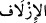

bir makamı ve güzel bir geleceği vardır.
“Sonra bu tutumundan dolayı” biz de “onu” yâni mağfiret dilediği bu sürçmesini
“bağışladık.”
Bahru’l-ulûm’da da belirtildiği üzere, bu, Zilhicce’ye rastlamıştı.
Ayrıca şu da rivâyet edilir ki: Dâvûd (a.s.) kırk gün kırk gece kendisini bağışlaması
için, nefsini Allah’a yalvarmaya zorlayarak farz namazlar ya da zarûrî durumlar hâriç
hiç başını kaldırmaksızın öylece secdede kalmış. Bu esnâda o kadar ağlıyormuş ki
başının etrafında ot bitene ve içtiği suların üçte ikisi gözyaşı oluncaya kadar ağlaması
dinmiyormuş. Neredeyse ölüp gidecekmiş. Hükümdarlık işleriyle ilgilenmeyi de
bırakmış, hattâ oğullarından İşâ adlı biri tahta oturmuş ve İsrailoğullarının eğri kalpli
olanları da onun etrafında toplanmışlar. Kırk gün sonra tevbesinin kabul edilip
bağışlandığına dâir vahiy gelince oğluyla savaşıp onu bozguna uğratmış. Zira Hz.
Peygamber’in (s.a.) de buyurduğu gibi: “İki halifeye birden bey’at edildiğinde,” yâni
birine bey’at edilmişken, ikinci birine de bey’at edildiğinde, “ikincisiyle savaşın.”[13]
Çünkü o, meşrû halifeye karşı ayaklanan biri (bâğî) gibidir. Ancak bu emir, ikincinin,
öldürülme dışında bir seçenekle bertaraf edilmesi mümkün olmadığında geçerlidir.
Bu bağışlamadan sonra Dâvûd (a.s.) için -tıpkı Âdem (a.s.) için olduğu gibi-
“Kuşkusuz yanımızda onun yüksek bir” yakınlık “makamı ... vardır.”
(__WORD__), yakınlık; (__WORD__), yaklaştırma; (__WORD__) ise yakın olma demektir. Vakfe yerine
yakın olan Müzdelife’ye bu adın verilmesi de izdilâftaki bu anlamdan ötürüdür.
el-Vesît’ta der ki: “Yanımızda onun...” ifâdesiyle ilgili olarak Mâlik b. Dînar’ın
şöyle bir ifâdesi nakledilir: Kıyamet günü Allah Teâlâ, Arş’ın sütununda ayakta
durmakta olan Dâvûd’a diyecek ki:
- ‘Beni o yumuşak ve ince sesinle yücelt.’ Dâvûd cevaben:
- ‘Dünyada iken o sesi benden aldığın halde bunu nasıl yapabilirim?’ deyince,
- ‘Haydi, onu sana iade ediyorum,’ diyecek ve Dâvûd o sesiyle Zebur okumağa
başlayacak ve bunun etkisiyle cennetlikler ellerindeki nimetlerle ilgilenmeyi bırakıp
ona kulak verecekler.
“Ve” cennette “güzel bir geleceği vardır”
Keşfü’l-esrâr’da bu güzel geleceğin bizzat cennet olduğu ifâde edilir. Yâni
peygamber ve velîlerin varacakları yer cennettir.
Ebû Saîd Harrâz (k.s.) da şöyle der: Peygamberlerin zelleleri, görünürde birer zelle
olmakla birlikte, gerçekte Allah’ın kendilerine verdiği değerin (kerâmet) ifâdesi ve
Allah’a yaklaşmaları için birer vesiledir. Dâvûd kıssasını ele alacak olursak, Dâvûd
(a.s.), önceden yaptıklarının bir zelle olduğunu farkedince Allah’a döndü, yalvarıp
yakararak mağfiret diledi ve bu sâyede O’nun katında güzel bir gelecek ve yakınlığa
sâhip oldu.
Harrâz haklı; çünkü peygamber ve velîlerin imtihan edilmeleri, onların
seçilmişliklerini (ıstıfâiyyet) eksiltmez; aksine şereflerine şeref katar. Şöyle ki: Hilâfet